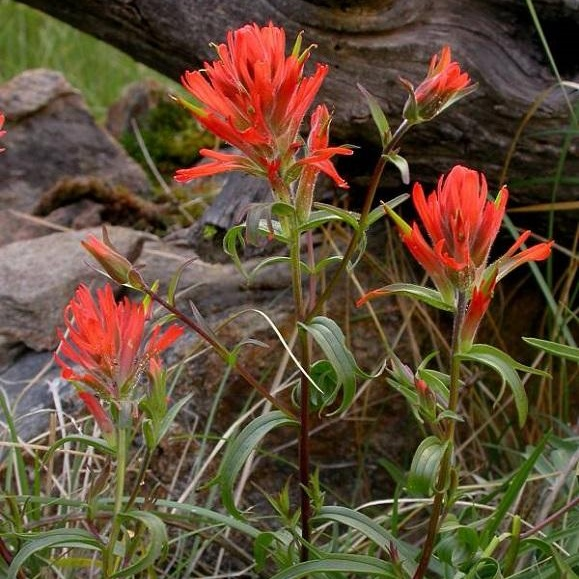
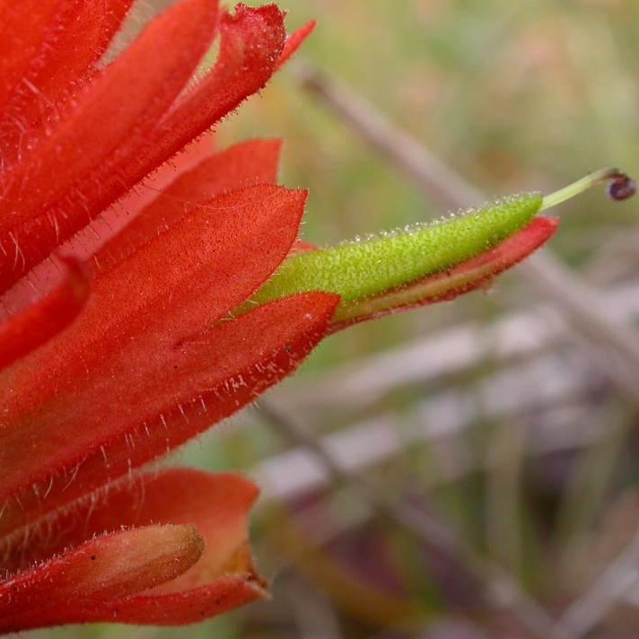

Castilleja miniata
- Common name
- Giant Red Paintbrush
- Family
- Orobanchaceae
- Family common name
- Broomrape Family
- Blooms
- May - September
- Habitat
- Moist meadows, streambanks, forest openings, from coast to high-elevations.
- Inflorescence color
- Red. Often deep bluish-red to pinkish, or even bright yellow-orange.
- Stature
- 12-30", erect.
- Leaves
- Flat, lance-shaped, deep green, without lobes.
- Florets
- Flowers mostly concealed by brightly-colored , sharply toothed and pointed, hairy bracts, the green beak of flower extending out with age.
Range Map
OR Flora